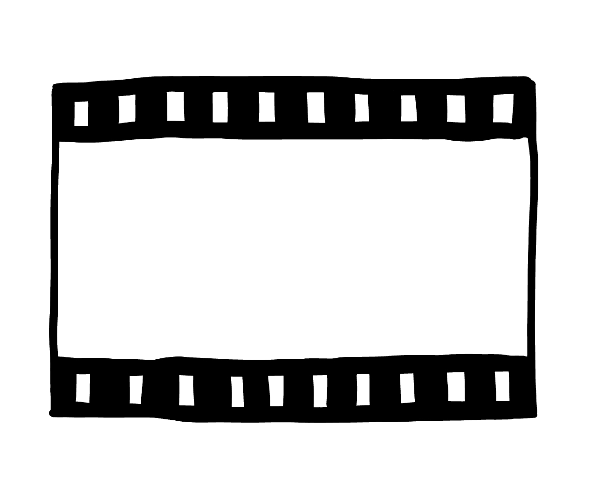

2026
【替换为真实内容】代表项目 / 课程项目 / 独立游戏
【替换为真实内容】描述你的职责、设计目标、工具、测试过程和最终成果。

《白蛇传》是一款以中国传统故事白蛇传为背景，融入非遗粤剧的国风水墨2D横板音乐打击游戏。游戏完整叙述了白素贞和许仙相遇相知，却因天道难容最后不得不分离的故事，节选了粤剧《白蛇传·情》最著名的两个片段《西湖相遇》与《水漫金山》，通过节奏打击，击败 boss 等玩法，感受粤剧的音色、美术魅力。
【替换为真实内容】这里放玩法机制、关卡结构、交互设计说明。
【替换为真实内容】这里放测试反馈、迭代过程、反思总结。
【替换为真实内容】这里放项目2封面和核心介绍。
【替换为真实内容】这里放玩法系统、UI、流程图或关卡内容。
【替换为真实内容】这里放迭代记录、最终成果、项目反思。
【替换为真实内容】这里放项目3封面和核心介绍。
【替换为真实内容】这里放设计过程、系统说明、视觉实验。
【替换为真实内容】这里放成果展示、玩家反馈、总结。
游戏设计师 / 互动叙事创作者 / 研究生申请者
【替换为真实内容】我关注游戏机制、叙事结构与玩家情感之间的关系，希望通过作品展示我的设计思考和迭代能力。
【替换为真实内容】在我的项目中，我负责玩法原型、关卡节奏、交互反馈、用户测试整理等工作，并持续将观察转化为设计改进。
【替换为真实内容】研究生阶段，我希望继续探索具有文化表达、系统深度和可访问性的游戏体验。
【替换为真实内容】描述你的职责、设计目标、工具、测试过程和最终成果。
【替换为真实内容】描述团队规模、你的贡献、遇到的问题以及如何解决。
【替换为真实内容】描述你如何建立游戏设计基础，以及这段经历如何影响你的申请方向。